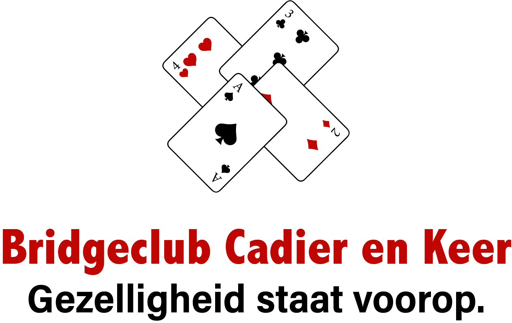
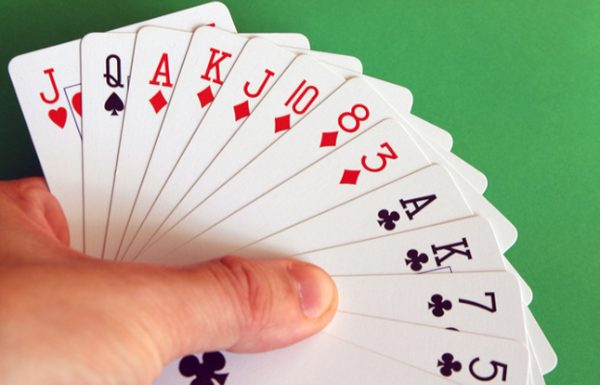

Informatie
Bridgeclub Cadier en Keer is een gezellige bridgeclub gelegen nabij Maastricht.
Gezelligheid én competitie gaan gelijk op.
Wanneer?
Elke dinsdagochtend van 09.30 uur tot circa 12.30 uur.
Waar?
Clubhuis Golfclub ‘Het Rijk van Margraten’
Bemelerweg 99
6267 AL Cadier en Keer, op korte afstand van Maastricht
Gratis parkeren
OV bereikbaar buslijn 350 Maastricht-Aachen
Voor wie?
Ben je een beginner of al een geroutineerde bridgespeler? Iedereen is van harte welkom om te komen bridgen. Kom gerust een keer meespelen!
Contact
E-mail
deholweg@hetnet.nl
Telefoon
+31 6 50 48 75 17
Bestuur
Wim van Baalen
John Hufkens
Djoeke Joskin-Vonk
